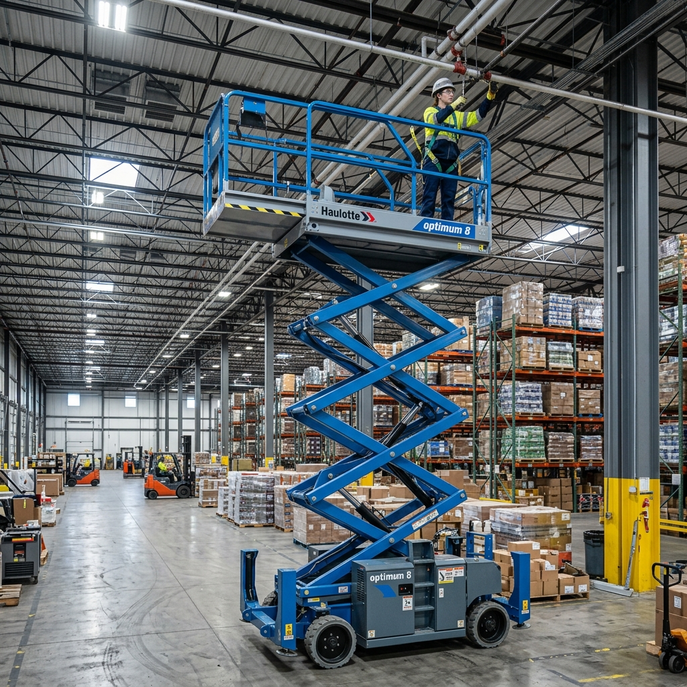

Bezpieczna praca na wysokościach. Skontaktuj się, by sprawdzić dostępność.

Idealne rozwiązanie do prac instalacyjnych, malarskich i konserwacyjnych wewnątrz budynków (hale, magazyny). Cicha praca, brak emisji spalin i ogumienie niebrudzące.
Przeznaczony do najcięższych prac terenowych. Oferuje doskonały zasięg boczny, pozwalający ominąć przeszkody, oraz napęd 4x4 gwarantujący mobilność w błocie.